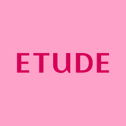

대표 로고대표 브랜드 마크
대표 로고대표 브랜드 마크홈 > 브랜드 매거진 > 마몽드
마몽드
마몽드(Mamonde)는 꽃을 콘셉트로 한 아모레퍼시픽의 화장품 브랜드로, 1991년 출시됐다.
산업 분야 뷰티·퍼스널케어 · 공개 등급 자료 기반 · 브랜드 평가 4.2 ★
한눈에 보는 브랜드
마몽드(MAMONDE)는 1991년 아모레퍼시픽이 선보인 꽃 연구 기반 스킨케어 브랜드다. 프랑스어로 '나의 세계'를 뜻하며, 영어 일색이던 시장에서 활동적인 20~30대 여성을 겨냥해 출발했다.
두 전환점은 꽃 콘셉트를 전면화한 리브랜딩과 2022년 중국 오프라인 철수에 이은 2025년 유럽 8개국 진출이다. 모회사 아모레퍼시픽그룹은 2024년 약 4조2,599억원, 2025년 약 4조6,232억원 매출을 기록했다.
브랜드 관점
마몽드의 경쟁력은 꽃과 식물 추출물을 효능 성분으로 표준화한 '하이퍼 플로라' 연구 자산에 있으며, 이는 같은 그룹의 이니스프리(자연주의)·에뛰드(색조)와 포지션을 가른다. 한때 K뷰티를 이끌던 단독 로드숍 모델은 명동조차 버티기 어려워졌고, 마몽드는 아리따움 같은 자사 로드숍 축소와 함께 올리브영·드럭스토어 등 멀티숍과 이커머스로 무게를 옮겼다.
다이소에 들어간 세컨드 라인 '미모 바이 마몽드'가 넉 달 만에 누적 100만 개를 넘긴 점은 초저가 채널 다변화의 성공 신호다. 중국 의존을 낮추는 대신 2025년 북유럽 유통사와 손잡고 유럽 8개국에 동시 진출한 것은, 중국 단일 시장 리스크를 미국·유럽 다변화로 분산하려는 K뷰티 전반의 흐름과 맞닿아 있다.
시작과 성장
1991년은 국내 화장품 시장이 방문판매에서 전문점·백화점으로 다변화하던 시기였고, 영어식 브랜드명이 범람하던 때였다. 마몽드는 프랑스어 합성어가 주는 신선함과 고급감을 앞세워 커리어우먼 시장을 파고들며 자리를 잡았다.
첫 번째 전환점은 2000년대 중국을 비롯한 해외 진출로, 2017년 기준 6개 지역에 들어갔고 2019년 초에는 전 세계 6,200여 개 매장을 운영했다. 두 번째 전환점은 2022년 중국 오프라인 매장 철수와 뒤이은 현지 온라인몰 폐쇄로 이어진 시장 재편이다.
이후 브랜드는 32년간 축적한 꽃 연구를 '하이퍼 플로라' 기술로 재정립하는 리브랜딩을 단행했고, 2025년 9월 북유럽 유통사 리코와 협업해 유럽 8개국에 동시 진출하며 글로벌 스킨케어 브랜드로 확장을 본격화했다.
브랜드 아이덴티티
마몽드의 핵심 가치는 '아름다움의 경계를 깨고 각자의 방식으로 삶을 꽃피운다'는 메시지로, 꽃의 개화·성장·생존 에너지를 피부 효능으로 옮긴다. 비주얼 아이덴티티는 심볼에서 확장한 M 패턴의 슈퍼그래픽과 꽃을 모티프로 한 정제된 그래픽 자산이 브랜드 전반을 일관되게 묶는다.
오산 식물원 내 '마몽드가든'은 꽃의 생태와 피부 효능을 연구하는 상징적 거점이다. 타깃은 합리적 가격대를 찾는 20~30대 여성이며, 보이스는 화려함보다 일상의 피부 관리와 자연 유래 성분을 담담하게 전하는 톤을 유지한다.
제품과 서비스
제품군은 토너·앰플·마스크 등 수분·진정 중심 스킨케어와 색조로 구성된다. 시그니처는 다마스크 장미수를 약 91% 담은 '로즈워터 토너'로 누적 557만 병이 팔린 재구매율 1위 제품이며 250mL가 약 1만8천원대다.
결광 라인의 '플로라 글로우 로즈 리퀴드 마스크'는 세트 기준 2만5천원대로 멀티숍과 이커머스에서 성장했다. 판매 채널은 올리브영·아리따움·드럭스토어, 자사몰, 다이소 세컨드 라인으로 다변화돼 있다.
현재 상태
본사는 아모레퍼시픽이며 마몽드는 아모레퍼시픽그룹의 스킨케어 브랜드다. 모회사인 아모레퍼시픽그룹은 2024년 매출 약 4조2,599억원·영업이익 약 2,493억원, 2025년 매출 약 4조6,232억원·영업이익 약 3,680억원을 기록했다.
마몽드 단일 브랜드의 매출·영업이익은 미공개다. 2022년 중국 오프라인 철수에 이어 현지 온라인몰도 폐쇄했고, 2025년 9월 유럽 8개국에 진출했다.
타임라인
정리된 연도형 이벤트가 없습니다.
BI/CI 변천사
대표 로고대표 브랜드 마크함께 읽을 브랜드
 뷰티·퍼스널케어 · 자료 기반이니스프리
뷰티·퍼스널케어 · 자료 기반이니스프리이니스프리(Innisfree)는 아모레퍼시픽이 2000년 론칭한 대한민국의 자연주의 뷰티 브랜드다. 제주 원료를 내세운 스킨케어·색조로 아모레퍼시픽 자연주의 1호 브...
 뷰티·퍼스널케어 · 디렉토리올리브영
뷰티·퍼스널케어 · 디렉토리올리브영올리브영은 대한민국의 헬스앤뷰티 리테일 브랜드입니다. 화장품, 스킨케어, 건강식품, 퍼스널케어 상품을 큐레이션하며 K뷰티 유통의 대표 접점으로 자리 잡았습니다.

뷰티·퍼스널케어 · 자료 기반에뛰드에뛰드(ETUDE)는 아모레퍼시픽그룹 계열의 색조 메이크업 중심 화장품 브랜드다.
 뷰티·퍼스널케어 · 자료 기반아모레퍼시픽
뷰티·퍼스널케어 · 자료 기반아모레퍼시픽아모레퍼시픽(Amorepacific)은 1945년 서성환이 태평양화학공업사로 창업한 한국의 대표 뷰티 기업으로, 2002년 현 사명을 채택했다. 설화수·라네즈·이니스...
 뷰티·퍼스널케어 · 자료 기반더페이스샵
뷰티·퍼스널케어 · 자료 기반더페이스샵더페이스샵(The Face Shop)은 LG생활건강 계열의 자연주의 로드숍 화장품 브랜드로, 2003년 론칭했다.
 뷰티·퍼스널케어 · 자료 기반미샤
뷰티·퍼스널케어 · 자료 기반미샤미샤(MISSHA)는 에이블씨엔씨가 운영하는 한국의 로드숍 화장품 브랜드로, 2000년 온라인 브랜드로 시작됐다.
 뷰티·퍼스널케어 · 편집 검수니베아
뷰티·퍼스널케어 · 편집 검수니베아니베아(NIVEA)는 1911년 독일 바이어스도르프(Beiersdorf)가 출시한 글로벌 스킨케어 브랜드다. 세계 최초의 안정적인 유중수(油中水) 유화 크림을 선보이...
 뷰티·퍼스널케어 · 자료 기반코스알엑스
뷰티·퍼스널케어 · 자료 기반코스알엑스코스알엑스(COSRX)는 2013년 설립된 한국의 민감성 피부용 스킨케어 브랜드로, 현재 아모레퍼시픽 자회사다.